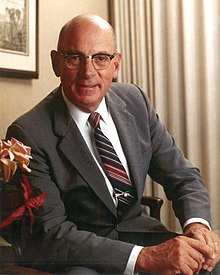
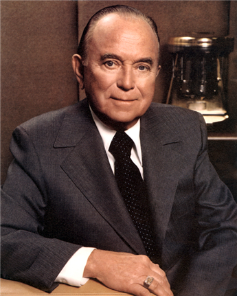
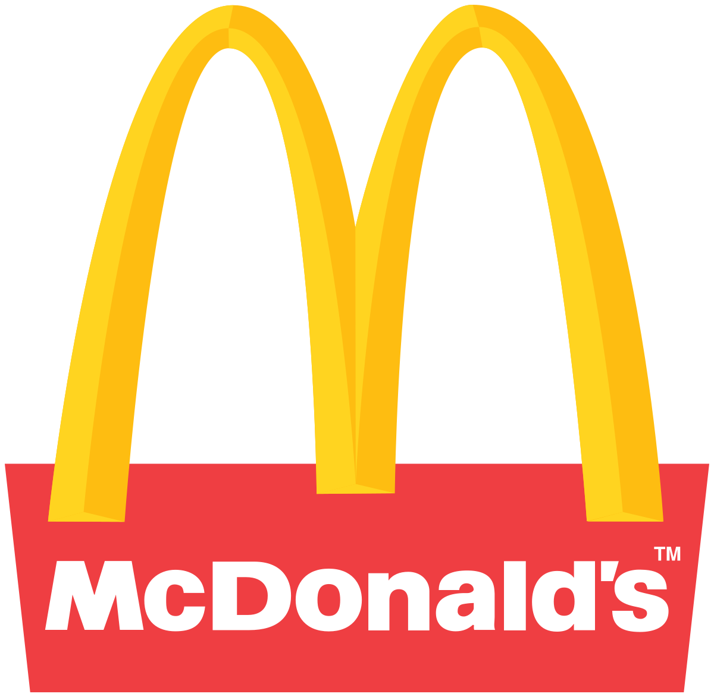
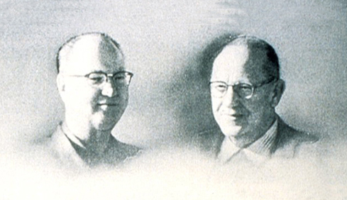
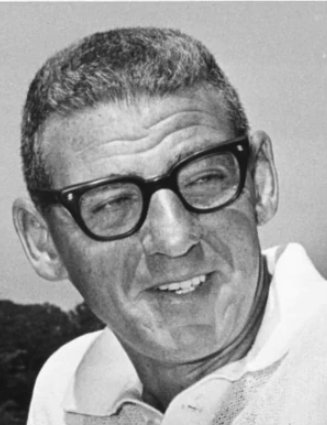

-
James McLamore

The creator and first CEO of the Burger King fast food franchise along with David Edgerton.
-
David Edgerton
The founder of Burger King. March 1, 1954 a beautiful day, he opened a franchise outlet of the restaurant chain Insta Burger.
-
Alexandre the Smart
The creator of the website
-
Ray Krock
Bought McDo in 1961 for $2.1 million and made it become the most successful fast food corporation in the world
-
McDonalds Brothers
Richard James and Maurice James McDonald were American brothers and entrepreneurs who founded the McDonald's restaurant
-
Harry Sonneborn
The "Financial Sorcerer" in McDonalds, saved the company many times with financial strategies!
-
Hanae Ichishima
Burger king’s campaign “battle of burgers” reminds me of one Japanese proverb,“the crafty schemer drowns in his own scheme” (策士策に溺れる), meaning you will end up with failure if you depend too much on your strategies with overconfidence.